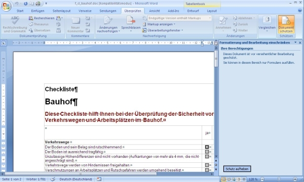
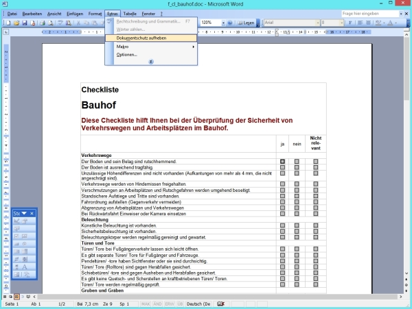
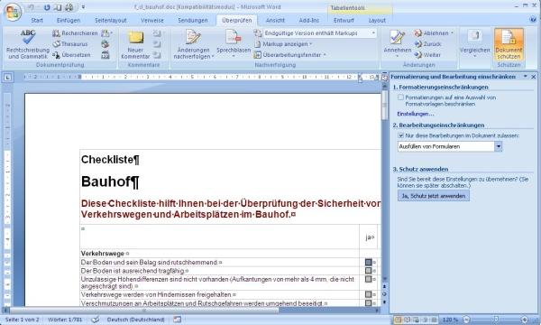
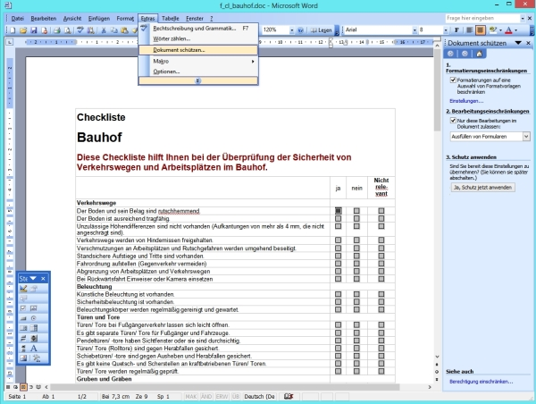

Dokumentenschutz
Die meisten der unter Formulare abgelegten  Word Dokumente sind mit einem Schutz versehen. Der Schutz kann folgendermaßen aufgehoben werden:
Word Dokumente sind mit einem Schutz versehen. Der Schutz kann folgendermaßen aufgehoben werden:
Eventuell erhalten Sie von Word eine Sicherheitswarnung und sie müssen zuerst die Inhalte des Dokuments aktivieren.
- Dokumentenschutz aufheben
WORD 2010
- Klicken Sie bei geöffnetem Dokument auf das TAB "Überprüfen"
- Klicken Sie den Button "Dokument schützen"
- Dann, am unteren Rand auf den Button "Schutz aufheben"

WORD 2003
- Wählen Sie bei geöffnetem Dokument den Menupunkt "Extras"
- Wählen Sie den Menupunkt "Dokumentenschutz aufheben"

Der Dokumentenschutz kann folgendermaßen wieder eingeschaltet werden:
- Dokument schützen
WORD 2010
- Klicken Sie bei geöffnetem Dokument auf das TAB "Überprüfen"
- Klicken Sie den Button "Dokument schützen"
- Wählen Sie in der darauf folgenden Liste unter Punkt 2 den Punkt "Ausfüllen von Formularen" aus
- Klicken Sie unter 3) auf "Ja, Schutz jetzt anwenden"

WORD 2003
- Wählen Sie bei geöffnetem Dokument den Menupunkt "Extras"
- Wählen Sie den Menupunkt "Dokument schützen"
- Wählen Sie in der darauf folgenden Liste unter Punkt 2 den Punkt "Ausfüllen von Formularen" aus
- Klicken Sie unter 3) auf "Ja, Schutz jetzt anwenden"
